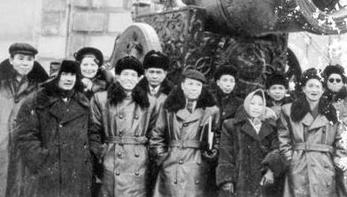

Mười Hai

ừ xưa con người đã sống quay quần trong một cộng đồng. Một khi các nhu cầu đòi hỏi đã vượt quá sức lực và khả năng của cá nhân và gia đình thì chúng chỉ được thoả mãn thông qua sự giúp đỡ hổ tương và hợp tác trong cộng đồng, nhất là trong lãnh vực quốc phòng, canh nông cây lương thực, chỗ ở, quần áo, giáo dục… Cái sinh hoạt muôn mặt chung góp cho việc duy trì cuộc sống vật chất của mỗi cá nhân, chú trọng đến sự phát triển về thể chất con người, từ đó bảo vệ sự toàn vẹn của con người và sự tiếp diễn của cuộc sống.
Nhưng ra ngoài những giới hạn của thể chất và cuộc sống vật chất là cái không gian vô giới hạn và vô cùng của cảm xúc và con tim. Xã hội không muốn và không thể can thiệp vào hai lãnh vực này. Cái bên trong đó chính là phòng xét nghiệm, là nơi cấu thành những quyết định của nội tâm, dẫn tới những hành động thể hiện nhân cách và biểu hiện ước vọng của con người. Có một sự hỗ tương qua lại giữa hai thế giới, thế giới bên ngoài tạo ra những điều kiện buộc con người phải phản ứng, thế giới bên trong phản ứng lại làm cho ngoại cảnh lại trở lại tác động trên con người. Cái cơ chế với hai chuyển động qua lại này giúp bảo đảm một sự quân bình cho cá nhân, những trao đổi giữa hai thế giới, bên ngoài và nội tâm, giúp định vị và duy trì con người giữa một hệ thống phức tạp gồm những tác động, phản tác động giúp cho con người cảm nhận sự sống.
Bởi vì, cộng sản đã ngăn cản những tiếp xúc và trao đổi giữa hai thế giới, ngoại cảnh và nội tâm, cắt đứt cái quan hệ giữa chúng và bộ máy ngưng không chạy hết công sức mà chỉ chạy cầm chừng, làm chậm đi một cách đáng kể chuyển động của các bánh quay và mắc xích. Trong những trường hợp quá nặng, cá nhân bị cắt đứt khỏi thế giới bên ngoài, họ sẽ mất đi những cảm xúc rồi dần mất luôn cả những khả năng của lý trí và tâm lý sẽ rơi vào sự tê liệt càng ngày càng lớn. Cá nhân có thể trở thành khùng điên và tổ tiên sẽ không mất công chờ đợi lâu để đón họ ở bên kia thế giới. Đó là thứ hình phạt nặng nề nhất dành cho con người. Bên kia chuyện đó chỉ là án tử hình.
Trong trường hợp cá nhân tôi, không hề có một bản án được tuyên, không nhà lao, không phòng nhốt tù. Nhưng trong nhà nước cộng sản, có bao nhiêu thứ hình phạt không tên được tiến hành, không chính thức, nhưng về lâu đó chỉ là những án tử hình không hơn không kém. Đó là hình phạt cắt phép thông công mà những kẻ cuồng tín chính trị đã cóp nhặt từ kho tàng tội phạm thời Trung Cổ, cắt phép thông công là vũ khí quyết liệt của bọn cuồng tín tôn giáo. Người ta đã cấm tất cả những người trong họ đạo không được chứa chấp, nuôi ăn hay cho mặc những kẻ bị mất phép thông công là những kẻ đã mất nhà cửa, kế sinh nhai, quần áo, không còn cách nào có được một cuộc sống bình thường như trước. Chuyện cắt phép thông công của tôi chỉ dừng ở chỗ cấm cửa không tôi vào dạy ở Đại Học và bước vào các Toà để hành nghề Luật Sư. Cả mười Uỷ Ban Chấp Hành Trung Ương của mười tổ chức quần chúng không chính thức đã tiến hành loại tôi ra nhưng họ chỉ dừng ở chỗ là không mời tôi đến dự những buổi họp của họ. Thái độ của cộng sản là có ý nghĩa: họ là những tín đồ của những biện pháp nửa chừng, rình đâm sau lưng, bỏ thuốc độc vào tách trà hay gian trá tạo ra những vụ tai nạn chết người. Tội ác đã phạm nhưng không để dấu vết. Dưới mắt của Luật Pháp, họ có thể kêu gào là chuyện xảy ra là không có chứng cớ, và hơn như thế, trong xã hội, họ đã tránh được những tai tiếng, tránh làm dấy lên những dư luận chính trị, mà vẫn giữ được danh tiếng cho người bị trừng phạt trong đời sống xã hội và chính trị. Chủ nghĩa Machiavelli vẫn được tiến hành dưới một lớp nguỵ trang đầy nghệ thuật.
Liên quan đến chuyện của tôi, tôi không bị ném vào tù hay bị còng tay. Tôi không bị bắt đưa ra bất cứ toà án hình sự hay chính trị nào. Tôi không bị bắt đày đi xa nhà hay xa gia đình. Nhưng cả xã hội và mọi người đều biết: để tránh phải chịu những phiền phức, những ai muốn tiếp xúc với tôi, dù bất cứ chuyện gì, đều không dám. Nhà tôi như đang chứa một người đang bị bệnh dịch, không nên đến gần. Ra đường, mọi người thấy tôi từ xa đã quay ra ngõ khác để tránh đụng mặt, nếu người nào đó, vì vô tình vô ý hay vì can đảm đến gõ cửa gặp tôi, ngay sau khi vừa rời khỏi nhà là đã có công an mời về cơ quan để tra tấn họ với những câu hỏi về họ là ai, về gia đình và tầng lớp xã hội và đặc biệt là có quan hệ gì đến tên tội phạm là tôi đây. Chắc chắn rằng tên tuổi của người đó sẽ được ghi vào sổ đen và từ đó sẽ thường xuyên bị theo dõi. Không cần phải có cặp mắt tinh anh để nhận biết rằng ở tất cả những ngã tư đường dẫn đến nhà tôi lúc nào cũng có một hay hai tên cớm dù đã thay đổi căn cước hình dạng nhưng không đổi nhiệm vụ cảnh giới và canh gác, để chận bắt những người chỉ vì vô tâm hay gặp lúc số phần bị xấu mà đến bấm chuông nhà tôi. Thật là một màn hài kịch, vừa tức cười vừa bi đát, mỗi khi tôi ra khỏi nhà để đi lang thang đây đó, tôi luôn luôn bị bám đuôi theo dõi chặt chẽ. Nhiều người bạn thấy tôi từ xa đã ngay tức khắc quay lưng và biến mất như chiếc bóng trong đêm. Nếu gặp đôi lúc, để giữ gìn sức khoẻ, tôi ra ngoài tản bộ quanh những con đường kế cận, tôi không bao giờ bỏ qua cơ hội, mỗi khi đi ngang qua những người công an đang theo dõi tôi, cẩn thận giở nón chào họ một cú ra trò làm cho họ không được vui lắm. Cả họ và tôi đều biết rõ họ đang diễn trò gì. Như thế họ phải hiểu là tôi quá biết rõ những lệnh lạc mà họ nhận từ chủ nhân và cái tinh quái của tôi là không bao giờ để cho cái cảnh giác của họ có thể thình lình bắt tôi được. Dĩ nhiên, tất cả thư từ của tôi đều bị mở và một số không bao giờ đến tay tôi. Tất cả thông tin đều được ghi vào hồ sơ, về tên tuổi những người gửi thư cho tôi và dĩ nhiên họ sẽ tiến hành điều tra về những người này. Tất cả những con chó to đùng được gửi đến để cắn tôi đều không thể táp với những cái răng nanh vì chúng không thể tìm ra khoảng trống nào có thịt của tôi cả. Sau nhiều năm dài theo dõi, chủ nhân của chúng khám phá rằng chẳng được tích sự gì nên đã buộc phải chấm dứt sự theo dõi đó.
Vào thời gian đầu của cuộc sống đầy bất hạnh của tôi, và trong suốt những chuỗi ngày đen tối đó, tôi thật bất ngờ khi thấy những nhân vật chính trị có tầm cỡ đến nhà tôi, như đồng chí Hà Huy Giáp. Tôi không biết ông ta tự ý đến hay có ai đó đã giao cho ông việc làm đến thăm tôi như thế. Ông ta tỏ vẻ lo lắng cho sức khoẻ của tôi và đặt những câu hỏi vô thưởng vô phạt về sinh hoạt của tôi. Trước đây tôi được nghe những lời đồn tốt về ông nhưng chưa có dịp gặp ông ta. Cuộc trao đổi không đi sâu đến mức riêng tư nhưng tôi có cảm tưởng là có những động lực thân thiện đã đưa ông đến nhà. Một người trong Trung Ương, một nhân vật khá quan trọng của Đảng, đã cất công đến thăm một kẻ bị loại, bị mất phép thông công. Bất kể cái gì, bất kể từ động lực tình cảm nào, cuộc viếng thăm của ông ta như thể một tia nắng chiếu vào đêm tối cô độc của tôi.
Mặc dù với cuộc viếng thăm rạng rỡ và đầy ánh sáng của Hà Huy Giáp như là một tia chớp làm sáng lên đêm tối của đời tôi, tôi vẫn cảm thấy đau khổ cô đơn sống cô lập vì người ta đã kết án tôi. Tôi không bị cô lập với gia đình nhưng vợ con cố giấu nhịn những dòng nước mắt để không làm tôi khổ thêm, và tôi biết những giọt nước mắt của họ lại sẽ tuôn trào những khi tôi vắng nhà. Về phần tôi, tôi rán tránh nhìn trong mắt họ để không nhìn thấy những nếp nhăn trên gò má vì những đêm mất ngủ và phải chịu quá nhiều đau khổ. Một khi quyền lực đã ném sức nặng vào tay gìới cầm quyền, họ hống hách tuyên bố, dưới cái nhìn của họ, là đã có kẻ đã phạm một tội ác không dung thứ được, thì cái sợ hãi đã lan ra đến nỗi không ai dám mở cửa hay mở lòng đón tiếp kẻ “phạm tội” đó. Kẻ “phạm tội” chỉ còn cách tự buộc mình sống trong cô lập mà cũng chỉ có nó là phải chịu đau khổ bởi những dày vò đau đớn của sự cô đơn. Không có nhà nào dám che chở cho nó ngủ, không một bộ quần áo nào có thể che chở cho nó chống chọi đêm đông lạnh giá, không món ăn nào làm ấm bụng, giúp cho nó chút sức để đứng dậy trên đôi chân mà bước đi, không còn một đôi tai thân thích nào để nghe lời than vãn của họ, không một tiếng nói đầy lòng thương nào để ban bố cho tiếng kêu than.
Người đời nhìn tôi, tôi nhìn họ, không còn ai nhận ra ai. Vâng, một kẻ bị trục xuất, bị cắt phép thông công thì phải sống cô đơn ở mọi nơi, ngay cả khi đang sống trong đất nước của mình.
Nhưng cuộc sống bị cô lập giữa những người xa lạ, dù họ là những người cùng nòi giống với bạn, đau đớn bao nhiêu cũng không sánh bằng cái khổ khi phải thấy cái thống khổ của chính gia đình mình, của những người thân thương nhất, của người bạn đời và của máu mủ của mình! Cái cô đơn này cũng là cái quí giá hiếm hoi làm lộ ra cái tình yêu sâu đậm tạo nên sợi giây liên lạc thiêng liêng giữa tôi và vợ con. Họ đau khổ khi nhìn thấy tôi khổ. Họ nghĩ suy cho đó là bổn phận và tình yêu nên cố giúp tôi bớt đau khổ bằng cách giấu đi khổ đau của chính họ. Tự nó, đó là cái động lực rất đáng khen, quý phái, đáng được thán phục và vinh danh, nhưng rủi thay, người chồng và cha, mà họ mong muốn làm cho bớt khổ, dù chỉ trong muôn một, lại làm cho hắn khổ đau gấp hai khi thấy không thể chia cho nhau những tiếng thở dài và niềm đau cay đắng. Trong cuộc chơi đầy bi thảm và đau đớn, mỗi người trong ba chúng tôi là lo cho người kia, cho hai người kia, tin rằng mình mới là kẻ có khả năng chịu những đợt tấn công của nghịch cảnh và giữ được sự thanh thản và cân bằng bên trong để có được sự an bình của tâm hồn. Nhưng cái mà đang giết chúng tôi là ai cũng biết mình đang lừa dối với chính mình, và muốn lừa dối người kia hay cả hai người kia. Không ai bị lừa cả, nhưng cả ba người đều tự cho rằng mình là người được nhiều an ủi, để rồi tuôn trào nước mắt nhiều hơn khi nỗi cô đơn đến trong đêm khuya.
Vì thế tôi rất đau khổ khi biết rằng vợ con đã phải chịu khổ vì mình, sức khoẻ họ đang kém đi vì những đêm không ngủ kéo dài, và cứ lập đi lập lại mỗi ngày. Ý nghĩ đó tra tấn tôi ngày đêm, xé nát tim tôi, làm tôi luôn thao thức trên giường, buộc tôi phải ngồi dậy, bước quanh trong phòng cho tới khi đi nằm lại. Trong nhà, cả ba con người đều không nhắm mắt ngủ được, và nhờ cái đói, họ đành cứ phải lê những buớc yếu ớt quanh phòng và nếu có một cơn ngủ đến làm họ nằm xuống, chẳng qua là nhờ sự kiệt sức đã làm tan biến chút năng lượng hay sức lực còn lại. Thật là một phép lạ khi chúng tôi đã vượt qua biết bao lần như thế, trong khi chỉ cần một lần là có thể đã dễ dàng lấy đi mạng sống của chúng tôi.
Nếu cứ mỗi cuộc khủng hoảng làm chúng tôi đau nhức chết người, thì những lúc tĩnh lặng sau đó, khi dài khi ngắn, lại làm cơn đau dồn dập hơn nữa. Cái đau đớn đã xé tôi ra từng mảnh, đè nghiến, xé toạc tôi, xuyên thủng tim tôi những lỗ sâu bén, cắn xé hồn tôi ra từng mảnh với hàm răng sắc nhọn. Đó là một thứ sức mạnh hiện hữu, có nét riêng và, nếu tôi có thể nói là xác thực, mà tôi không thể đo lường được cái cường độ, cái năng động, sức mạnh, sự tiến hoá và chu kỳ, thời gian ngưng đọng và tái diễn. Ngược lại, những cảm giác thống khổ mới đang tra tấn tôi lại thuộc về một chủng loại hoàn toàn mới mà tôi chưa bao giờ được biết. Ngược với cái đau đớn mà tôi gọi là hiện hữu xác thực đang đập nát tinh thần và đang xé nát tim tôi, thì những cái đau mà tôi cảm nhận là những tác động tiêu cực làm tan rã ý chí, làm mềm đi hệ thần kinh, làm chậm dòng sinh khí, làm nhu nhược hoàn toàn thể chất và tâm lý của tôi, biến tôi thành một thứ giẻ rách chỉ xứng đáng để ném vào sọt rác. Cái khổ đau này, nó như cơn thuỷ triều đang dâng, tràn ngập và nhấn chìm tôi trong một tình trạng suy nhược và tê liệt, chỉ để lại trong tôi một mảnh ý thức rời rạc đủ để tôi nhận ra cái sức nặng của một khoảng trống rỗng không. Trước đây cuộc sống của tôi thật sống động, cho những bài giảng ở Đại Học, tranh cãi trước Toà Án, viết những bài tham luận, khảo cứu văn chương. Tôi thường có một cảm giác sung mãn, nóng bỏng muốn hành động và biểu lộ ra ngoài. Ngày nay tôi trở nên gật gù trong trạng thái lừ đừ yếu đuối, tưởng như đang trôi dạt trên một biển cả không bờ không bến và bị tan biến trong cái vùng nước mênh mông không động đậy. Ngày xưa, thời gian đối với tôi là một kho tàng quí giá nhất, nó trôi qua quá nhanh ngược lại ý mình, đã làm tôi tuyệt vọng; ngày nay nó chỉ là một chiếc khung hình hoàn toàn không có gì trong đó, hiện ra một khoảng trống không màu sắc, chỉ để làm hư tầm nhìn và tiêu diệt cả ý chí. Tôi căng óc lấp đầy cái hư ảo này với những cảm xúc nghe, nhìn. Tôi phải tìm nhìn chăm chăm vào từng chiếc lá trên cây bên đường, chú mục vào từng kẻ đang bước trên phố, từng cái xe chạy, tôi như một người mù vừa mới tìm được lại ánh sáng, vừa xem xét chăm bẳm từng thực tiễn của cuộc sống, vừa ngạc nhiên trước những điều mới lạ. Nhưng mọi cố gắng đều trở nên vô ích, và sự kiêu hãnh của họ đã ném tôi vào một niềm thất vọng không thể chịu đựng được. Cả thời gian đó, dù tôi đã cố gắng quên mình trong những chuyện tầm phào, nó vẫn tiếp tục làm cho tôi hoang mang lẫn lộn, nó vẫn quấy phá tôi bằng cái rỗng tuếch của nó.
Tôi nảy ra ý nghĩ một mình lang thang khắp phố, tập trung với tất cả chú tâm nhìn ngắm những sinh vật, tất cả các căn nhà, tất cả những hoạt cảnh đang chuyển động, những thứ kết hợp thành bao nhiêu là chuỗi phim tài liệu về đời sống ở thủ đô. Không có một du khách nào đã đẩy trí tò mò của mình đi xa như tôi như thế. Nhưng tất cả những bận bịu, mà tôi hiểu rõ hơn ai hết đó là chuyện vô ích, cũng không cho phép tôi lấp đầy hết khung thời gian của tôi. Tất cả những việc làm vô hồn đó không thể nào thoả mãn một tâm hồn đang khát bỏng những ước vọng chưa thoả, với những nhiệt tình nhất định. Tôi tự so sánh mình với người lữ hành đang băng qua sa mạc, nặng chĩu trên vai một gói vàng và không cầu xin gì hơn là được trao tất cả số vàng kia để đổi lấy một cốc nước.
Tôi lang thang trôi dạt đến khu Ba Đình, nơi mà xưa kia tôi hay đến chơi tennis trong những lúc rỗi rảnh. Vẫn chưa đến giờ tan sở, trên sân vẫn vắng bóng người chơi. Đang ngồi cạnh sân, bỗng nhiên tôi hết sức ngạc nhiên thấy như một cục gì đang lăn tròn dưới chân tôi mà lúc đầu tôi cứ tưởng là một cục len. Đó là một con mèo bé tí chắc mới đẻ vài ngày trườc đây, chắc là mẹ nó, theo thói quen, đã quyết tâm bỏ đi để nó tự một mình khám phá thế giới. Tôi bế nó lên trong lòng bàn tay, dịu dàng vuốt ve nó và tôi cảm thấy nó thật tội nghiệp. Nó và tôi là hai kẻ lạc loài đang trôi dạt bơ vơ trong cuộc đời, cả hai cùng chung cái đói, nạn nhân cùng bị cô lập và sầu não chung một số phận. Sau khi đi một vòng trong khu nhà hỏi xem ai là chủ nó, câu trả lời luôn là không biết, tôi cám ơn sự may mắn hay Đấng Cứu Thế nào đó đã trao cho tôi một người bạn đồng hành bất hạnh và khốn khó để tôi có thể thì thầm chuyện vãn hầu lấp đầy cái khoảng thời gian trống vắng, để cho tôi có một kết nối tình cảm mà tôi không dám đòi hỏi nơi vợ con vì sợ rằng sẽ đào sâu thêm nỗi khổ đau của họ. Giữa tôi và vợ con, sự im lặng là cái hùng biện hơn là những lời nói và nó không làm tuôn thêm những dòng nước mắt. Câu chuyện giống như tôi và con mèo con kia: chỉ cần nhìn nhau trong ánh mắt là quá đủ cho những trao đổi tình cảm.
Trở về nhà, tôi chia cho nó chén cơm trắng của tôi. Tôi rất vui khi thấy nó bằng lòng một chút cơm như thế và nó lên cân khá nhanh. Mỗi khi tôi ngồi thiền hay ngồi mơ mộng bên cạnh cửa sổ, nó leo lên ngồi trên đùi tôi, về đêm nó đến nằm kề bên cạnh. Nhờ đó, tôi bắt đầu bước những bước đầu tiên, bước ra khỏi con đường hầm vô tận của cô đơn, tự cho mình một lý lẽ để sống bằng cách lấp đầy những khoảng trống trong sự hiện hữu của tôi. Tôi không thể đi dạo một mình ngoài đường vì lúc nào cũng có bọn chó săn bám gót phía sau. Tôi không thể ghi danh vào câu lạc bộ tennis Ba Đình vì giá vợt, banh và giày vải để chơi là quá cao với một giá thật điên khùng và tôi không thể nào vươn tới. Nhưng điều làm tôi đau lòng nhất là thấy biến mất những bạn cùng chơi ngày xưa nay kiếm cách tránh và chạy mặt tôi. Sự bỏ chạy của họ như là những cú dao đâm vào tim tôi, tôi không thể nào đóng vai một kẻ vô gia cư hay cùi hủi. Tôi hiểu thái độ những người bạn chơi tennis kia, tất cả đều là những chức sắc cao cấp trong chính quyền, dĩ nhiên là những người của Đảng, là những người luôn luôn lo lắng hơn ai hết về tương lai quan chức và chính trị của mình. Vì thế họ sẽ bị kinh hoàng khi phải bắt tay một kẻ đang bị bệnh dịch và phải chơi một trận tennis với kẻ này. Họ cũng chỉ là con người, với những tâm hồn yếu kém, tôi không thể nào mong họ bớt mất tư cách hơn, bớt hèn hạ, bớt mất phẩm giá hơn.
Con mèo lớn nhanh và nó được tôi dành cho nhiều săn sóc. Nó giúp tôi hoà giải lại với cuộc đời, nó làm nẩy nở trong tôi cái thú vui được có lại những sinh hoạt trí thức, những sinh hoạt ngày xưa đã đem lại cho tôi những niềm vui thanh khiết. Tôi phải làm cách nào để khởi động lại cái máy trí thức của tôi đây? Tôi lượt xét lại tất cả từ năm 1932, năm mà tôi trình luận án Tiến Sĩ Quốc Gia về Văn Chương và Tiến Sĩ Luật. Trong lúc chọn đề tài khảo cứu, tôi dành phần như nhau giữa phương Tây và phương Đông, giữa nước Pháp và Việt Nam. Luận án chính của tôi về văn chương viết về Musset, luận án về Luật viết về cá nhân trong xã hội xưa dưới các triều đình An Nam (Bộ Luật nhà Lê). Riêng về cái luận án bổ túc về Văn Chương, nó nhằm giới thiệu đến công chúng Pháp một tác giả người Pháp đã viết về đề tài “Việt Nam vào cuối thế kỷ 19” tên Jean Boissière. Niềm ưu tư về sự cân bằng và giao hoà giữa hai thế giới đã gây cảm hứng cho tôi trong bốn cuốn sách viết vào khoảng năm 1940. Cuốn thứ nhất, Nụ cười và nước mắt của tuổi trẻ, trình bày cái tâm lý và những sinh hoạt trí thức và xã hội của một cô gái trẻ người Việt, được đào tạo ở Pháp, có trách nhiệm phải xây dựng phương Đông của ngày mai. Chính cái “xây dựng phương Đông của ngày mai” lại là cái cảm hứng để tôi viết hai cuốn sách, một cuốn dành riêng viết về những giá trị của Pháp: Những viên ngọc của nước Pháp và cái khác với những giá trị vùng Địa Trung Hải (Tây Ban Nha, Ý, Hy Lạp), một cuốn là Bước đầu của Địa Trung Hải. Tác phẩm thứ tư là một vở kịch mang lên sân khấu cái xung đột, trên khía cạnh tình cảm, giữa một kẻ du hành hiện thân cho phương Tây với những nhu cầu hay di động và thay đổi, và một cô gái tiêu biểu cho tình cảm qua sự trung thành và bền vững: “Cuộc hành trình và tình cảm”.
Từ năm 1940 đến 1945, nhiều xáo trộn cực kỳ nghiêm trọng đã xảy ra trên thế giới và ở Việt Nam: từ nay, nước Pháp không còn tập trung vào những hoạt động trên lãnh thổ Việt Nam nơi mà Cách Mạng cộng sản đã thắng thế từ năm 1945 và đang điều hành nhân dân. Từ 1945 đến1956, tôi và gia đình bỏ vào bưng cùng tham gia Kháng Chiến chống thực dân. Khi trở về Hà Nội, tôi trở lại đi dạy Văn Chương ở Đại Học và mở lại văn phòng Luật Sư ở Hà Nội. Tôi được bổ nhiệm, nhờ Đảng ban ân huệ và cũng chẳng phải do tôi xin, ngồi trên ghế của Uỷ Ban Trung Ương của mười tổ chức quần chúng. Từ năm 1958, vì đứng ra bảo vệ cho dân chủ, tôi đã bị tước bỏ mọi nhiệm vụ; tôi đã nhắc lại những diễn biến này trong phần đầu của cuốn sách này.
Đó là những sinh hoạt trí thức của tôi từ 1932 cho đến ngày hôm nay. Giờ đây tôi sẽ phải bám víu vào thế giới nào đây? Đó là một điều cực kỳ quan trọng. Cái vấn đề chính yếu mà tôi đã dựa vào để làm căn cơ cho cả cuộc đời trí thức của tôi là điểm gặp nhau giữa Đông và Tây, ngược với luận đề của Rudyard Kipling là chối bỏ cái khả năng đó. Tôi tự cho mình cái công việc là lo giúp sự hiệp thông qua lại của hai thế giới, trên cơ sở đó hai bên có thể thực hiện cuộc gặp gỡ. Mỗi thế giới đều có một thang giá trị riêng, đôi khi kình chống lẫn nhau. Sự gặp gỡ, trên cơ sở của sự thông cảm lẫn nhau, sẽ kéo theo việc bên này giúp đỡ bên kia để bổ sung lẫn nhau và cùng đào luyện để mang những lợi ích chung cho nhân loại. Chính theo hướng đó mà tôi đã đặt hết suy tư để hoàn tất tác phẩm của cuộc đời tôi.
Nhưng phương Đông, đặc biệt là Việt Nam lại va phải một số khó khăn trong việc đi tìm những giải pháp cho những vấn đề cấp bách và quan trọng. Thí dụ như vấn đề đào tạo con người mới. Ở Việt Nam nhiều lần cải cách về giáo dục vẫn chưa mang được gì thoả đáng. Có lẽ nên cần thiết hoàn toàn xoá bỏ và làm lại tất cả những quan niệm chính trị, nhưng đảng cộng sản Việt Nam sẽ nhìn với con mắt rất xấu những ai nêu lên cách đó như một giải pháp cho việc cải tổ giáo dục. Có lẽ phải làm cho các vị lãnh đạo nghiền ngẫm về những tư duy về sư phạm của Pháp, chỉ trong hai thế kỳ, từ Érasme đến Rousseau, đã thành công đào tạo con người, nói đúng hơn, con người trí thức hiện đại, thiếu họ cuộc cách mạng Khoa Học Kỹ thuật không thể nào thành công. Công việc nghiên cứu của tôi là nhắm vào điểm này.
Một vấn nạn có tầm cỡ khác là giới trí thức Viet Nam phải giải quyết thế nào về cái quan hệ giữa chính trị và văn học. Rất nhiều văn nghệ sĩ không thể chấp nhận cho chính trị quản lý chi phối những sáng tác văn học. Đảng đã tuyên cáo rằng chính trị phải đứng ra quản lý văn chương và mục đích của văn chương là phải phục vụ chính trị trong những đường lối chung và những đường lối riêng của Đảng. Tất cả những nhà văn vâng theo nguyên tắc này đều nhận được công danh và bổng lộc, cho mình và cho cả những người trong gia đình. Nhưng đa số những người khác thì nhăn nhó mà theo hướng này. Như vậy vấn đề cũng quan trọng như việc đào tạo con người. Như vậy, rất cần thiết cho tôi được đưa ra những suy nghĩ về vấn đề kia. Không phải để nhắm làm thay đổi những kẻ ương ngạnh đã dính luận cương của Đảng, tôi cảm thấy có điều ích lợi để trình bày cho độc giả về vấn đề đã được giải quyết thế nào dưới thời Cổ Đại Hy Lạp và thời Cổ Đại La Tinh.
Hy Lạp thời cổ đại đã đưa ra mẫu mực của Eschyle (Aiskhylos), một trong những bậc thầy về bi kìch Hy Lap, mà những tác phẩm đều được chính quyền và nhân dân ngưỡng mộ và trọng nể. Thật không có gì quan trọng khi chính trị thích nghi với văn chương hay ngược lại. Cái hiển nhiên là tác phầm của Eschyle là đượm mùi thơm của chính trị, là niềm vinh quang của nhân dân đã đánh thắng giặc ngoại xâm. Người đọc Việt Nam ta sẽ tìm thấy trong đó tiếng vọng của niềm vinh quang của chính chúng ta.
Một hình ảnh tương tự được thấy trong tác phẩm Virgile (Vergilius). Đường lối chính trị của Auguste là thúc đẩy sản xuất nông nghiệp; như thế vai trò nhà thơ là ca tụng vẻ đẹp của nông thôn, viết nên những vầng thơ của nông nghiệp. Auguste còn đưa ra một đường lối chính trị hoà hợp và đoàn kết để củng cố nền tảng của vương quốc sau khi gầy dựng nên nó. Việt Nam ta có lẽ có cùng hoàn cảnh như thế, trong những vinh danh tán dương về nền nông nghiệp cũng như trong đường lối chính trị của mặt trận dân tộc cho Tổ Quốc.
Cuối cùng là tuyệt phẩm của Eschyle: vở kịch bộ ba Oresteia cũng đáng cho Việt Nam quan tâm, vì tác giả đã nêu lên chuyện trả thù cá nhân được chuyển biến thành chuyện trừng phạt bằng pháp lý của Nhà Nước, và, một mặt khác, từ những nhóm trùm buôn nô lệ tiến đến một nền dân chủ có nô lệ. Nền dân chủ bắt đầu thăng hoa và nhận sự giúp đỡ của thần Hoà Bình, những Erinyes, thần Báo Thù, tất cả được biến hình thành những Euménides là những thiên thần của dịu ngọt và lòng nhân.
Để giúp mình vượt qua những dằn vật của sự trống trải đã thấm nhập vào con người tôi làm tôi trở nên tê liệt trong bạc nhược và rầu rĩ. Cái suy nghĩ cả ngày lẫn đêm dẫn tới việc tôi định ra một chương trình làm việc mà theo tôi ước tính là có thể kéo dài đến hai mươi năm.
Như vậy, trong cái khung suy niệm về chỗ gặp gỡ giữa Đông và Tây, để theo đuổi chủ tâm của tôi là làm sao cung cấp vật liệu của phương Tây cho một công trường phương Đông, tôi nhấn mạnh đến những cống hiến của nền văn minh Cổ Đại của Hy Lạp và La Tinh. Những cống hiến này có thể là rất bao la, nên tôi chỉ chọn những gì có liên hệ trực tiếp đến thời sự Việt Nam, và chính xác hơn là những đóng góp đặt ra cho trí thức và giới nhà văn. Và cũng như, trong những năm dài trong mật khu, người ta đã đề nghị chúng tôi học tập về chủ nghĩa Marx, với tôi đấy là cơ hội ngàn năm một thuở để đưa vào áp dụng những gì trong chủ nghĩa Marx để giúp tôi hiểu nhiều hơn sự tiến triển của xã hội và sự xuất hiện của những biến cố lịch sử.
Sau rốt, vì các nhà lãnh đạo Việt Nam là những người đầu tiên quan tâm đến những nghiên cứu của tôi nên chúng được tôi viết bằng tiếng Việt chứ không bằng tiếng Pháp.
Bốn tác phẩm đã hoàn tất sau những cố gắng của tôi:
1) Những chủ thuyết về Giáo Dục của Âu Châu từ thế kỷ XVI đến thế kỷ XVIII (Erasme đến Rousseau);
2) Eschyle và bi kich của Hy Lạp;
3) Bản dịch tiếng việt của tác phẩm Oresteia của Eschyle, với một chương nghiên cứu dùng như lời giới thiệu;
4) Virgile và sử thi Hy Lap.
Mỗi tác phẩm gồm chừng 500 trang máy đánh chữ. Tôi đã gửi một bản sao cho các Uỷ Ban của Trung Ương Đảng (Uỷ Ban Giáo Dục và Uỷ Ban Văn Hoá Nghệ Thuật); tôi đã nhận được những lời khen ngợi và được giấy phép ấn hành. Rủi thay, những cơ quan ấn hành, nơi mà tôi giao các bản thảo, đều từ chối vi họ không có ngân sách để in chúng. Tôi đành chịu thua. Thât là cộng sản.
Tôi đã lên kế hoạch là sẽ làm việc một thời gian dài, chẳng cần bận tâm muốn biết là tôi có thể hoàn tất nó trước khi tôi chêt hay không. Hai mươi năm nữa thì tôi đã sáu mươi lăm. Biết tôi còn sống đủ lâu để đạt tới mục đích của tôi không? Chẳng quan trọng, cái thiết yếu của tôi là làm sao phá vỡ cái khoảng không vô tận đang níu chặt lấy tôi, thoát ra khỏi cái chán nản làm suy nhược con người mà tôi đang bị dính nhựa, tiêu pha thời gian ngâm mình trong những dòng nước cứu giúp của một sinh hoạt có ích và say mê. Nỗi khổ đau dai dẳng của tôi xem như chấm dứt, và chắc chắn là tôi đã lấy lại nét mặt vui tươi vì vợ và con gái tôi không còn khóc khi nhìn chăm vào mặt tôi. Góp vào cái âu yếm của vợ con là cái nũng nịu của con mèo nay đã lớn trông thấy, khoanh mình nằm trên đầu gối tôi khi tôi đang ngồi làm việc và cọ sát cái đầu nó vào chân tôi khi tôi đứng dậy. Con vật thật đáng thương! Nó thiếu tất cả các thứ mà những con mèo đang vênh vang trong phòng khách của các ông lớn ngập đầy: mẩu thịt, chút sữa hay chút canh gà. Tôi thì thầm vào tai nó rằng nó đã được sinh ra dưới một ngôi sao xấu vì nó đã rơi vào nhà của một kẻ bị mất phép thông công, ông ta cũng thế, keo kiệt từng miếng cơm, lấy cớ là để giữ gìn “đường nét” như một cô gái đẹp có lẽ đang cố gắng cho lần chinh phục sắp đến. Tôi đã ép con mèo phải tự chăm lo đường nét của nó, đề gìn giữ cái dáng vẻ thanh tao của giống mèo, khi nó phơi bộ xương sườn ốm nhách trên tấm chiếu, đặt dưới sàn nhà, nơi mà nó dùng như bàn ăn. Như một nhà thơ đã kêu gào: “Ôi lao động, cái luật thanh thản của thế giới!”, chính sự làm việc đã cứu tôi: tôi như được sống trong môi trường của mình, tôi như con cá được vẫy vùng trong nước. Tôi làm sống lại niềm vui sống và niềm vui này sẽ không bao giờ ra khỏi tôi, dù chỉ trong chốc lát, cho tôi được hít thở không khí của trời đất và thời gian.
Việc bán tài sản của tôi hết món này đến món khác đã giúp chúng tôi một ít tiền bạc, cái ít ỏi mà nhờ đó chúng tôi có những bữa ăn đạm bạc hằng ngày. Số chén cơm cho cả ba chúng tôi, bữa trưa và buổi tối, đã được nâng lên con số 12 và phần rau cũng được nâng lên. Thật là một bữa tiệc cho chúng tôi ngày Chủ Nhật, khi tự cho phép mình mỗi người một trái chuối! Tình trạng bị cô lập chúng tôi vẫn thế: không ai trong dòng họ dám gõ cửa nhà tôi và không một người bạn nào thoáng qua cửa sổ. Tất cả họ đều đi vòng để tránh phải đi qua con đường chúng tôi ở. Tôi không ra khỏi nhà nữa, cũng không ra khỏi cái bàn làm việc của tôi để loại cho những người quen một cuộc gặp gỡ mà họ sợ còn hơn là sợ ngọn lửa của địa ngục.
Dù thế, tôi không biết họ làm cách nào, những người bạn xa gần vẫn không quên tôi. Nhiều lần, khi tôi mở cửa nhà buổi sáng, tôi chợt thấy nhét dưới cánh cửa là một phong thư nhồi đầy giấy bạc. Chúng tôi khóc vì xúc động và chúng tôi tuyệt vọng vì không biết làm cách nào để tỏ lòng biết ơn những ngưới đầy lòng tốt mà chúng tôi không hề biết tên! Nhiều lúc, khi màn đêm buông xuống, vào lúc trời còn nhá nhem, có những lần tôi làm vài bước đi dạo ngoài đường. Bọn cú vọ lẽo đẽo một khoảng cách phía sau, nhưng rất khó cho chúng nhận ra mặt của những người, đạp xe ngang qua rất nhanh, vội vàng nhét vào tay tôi một phong thư hay một gói nhỏ. Chả thấy, chả biết! Tất cả những thao tác ấy xảy ra chớp nhoáng: mấy tay công an chỉ kịp thấy ánh đèn xe đạp nhấp nháy!
Tất cả những cử chỉ hào phóng mà tôi là kẻ được hưởng làm tôi suy nghĩ. Tôi nhận thấy cái bất lực của nhà cầm quyền trong việc ngăn những tin tức được truyền đi. Họ đã quyết định tước bỏ vĩnh viễn quyền công dân của tôi, ngăn cấm mọi liên lạc của tôi với thế giới bên ngoài. Trong nước, cái sợ hãi bị trừng phạt, trực tiếp hay xa gần, đã đánh gục những kẻ ngây thơ hay bạo gan dám liên lạc với một loại «bị bệnh dịch» như tôi, xoá sạch những tấm lòng đầy thiện ý. Dường như với tôi, bị cô lập cả trong và ngoài nước, cái chết tự nhiên sẽ tiếp nối không sớm thì muộn cái chết dân sự kia. Nhưng cái hy vọng đó xem ra là vô ích. Những tin tức dù bí mật nhất rồi cũng sẽ thoát ra ngoài xã hội, chúng lan truyền với tốc đô chóng mặt, nhờ những phương tiện truyền thông hiện đại và bởi cái tác động của tính tò mò mà mọi người đang cháy bỏng muốn biết những gi đang xảy ra ngầm trong hậu trường chính trị.
Tôi sẽ vén lên cái bất lực thứ hai của nhà nước: Có thể chăng họ không muốn cái chết của tôi, một cái chết mà họ không muốn bị bẩn tay và cẩn thận tránh không bị nhân dân quy trách nhiệm, nhưng họ sẽ không được nhìn cảnh tượng biến mất của tôi bằng cặp mắt thiếu thiện cảm. Họ đã dùng mọi thủ đoạn để loại bỏ một trong những giống trí thức tồi tệ này: bằng cách chối bỏ bất cứ phương tiện kiếm sống nào của người này. Tôi và gia đình không chết vì đói: chúng tôi quá khổ đau vì đói, mất hàng kí thịt trong cơ thể, trên mặt chúng tôi là những vết tích của cái bụng lõm sâu và cái bao tử trống không, nhưng chúng tôi chịu đựng được! Tiền thu được của những lần bán liên tiếp các tài sản giúp chúng tôi kéo dài những ngày dật dờ trong nhiều năm nhưng chúng tôi không cho phép những kẻ căm ghét chúng tôi được vui khi hay tin chúng tôi chết. Và, vào những khi chúng tôi cạn kiệt tiền bạc thì lòng hào hiệp của những người bạn trong nước hay đang ở nước ngoài ném cho chúng tôi những chiếc phao cứu hộ giúp cho chúng tôi nổi trên mặt nước thay vì phải chìm sâu đến tận đáy sâu của hư không. Nhiều người bạn trong nước cũng như ở Pháp, sau bốn mươi năm bặt tin, cứ tưởng rằng tôi đã bị gạt tên khỏi danh sách của những người còn sống. Nhưng tôi đã trả lời cho họ: “Tôi là một loài cỏ dại. Người ta có thể bước lên nó, đạp bẹp nó nhưng một khi có một giọt sương mai, giọt nước mưa hay một dòng nước mắt rớt xuống, nó lại bừng dậy mỉm cười trước ánh sáng mặt trời”. Nguồn sống của chúng tôi, bắt đầu khô cạn sau khoảng chục năm, lại được đong đầy bởi những dòng thác sôi sục của lòng hào hiệp của những người bạn, những người quen trong nước và trên thế giới. Họ là những kẻ không tên, không biết mặt nhưng không phải là không thận trọng, đã sáng tạo ra những phương cách tài tình chế nhạo tất cả những kẻ cầm quyền trên thế giới, bất kể cái hung tàn đần độn và cái cảnh giác gay gắt của chúng. Họ đã chung tay làm nên một mặt trận không chính thức nhưng năng động, mặt trận của lòng trắc ẩn và sự tử tế, để đưa bàn tay cứu giúp những nạn nhân của bọn độc tài khát máu. Cái nhiệt tình của họ sinh động là nhờ lòng vị tha và lòng vô tư đã gạt qua tất cả những toan tính của ích kỷ. Cái mục tiêu mà họ muốn đạt đến có hai khuôn mặt: một mặt là tinh thần nhân đạo và tình anh em giữa những người trí thức, mặt kia là cái kinh hoàng của những kẻ bạo ngược và sự tàn bạo. Cuộc chiến đấu của trí thức tiến công chống lại cái độc tài mù quáng và vô nhân đạo, bởi lẽ kẻ độc tài đã ra tay đoạ đầy người trí thức kia! Một trí thức, trong cái liêm chính của con người và với cái minh mẫn trong tinh thần, là một người lính chống lại sự chuyên chế chuyên lập đi lập lại những lời hứa hão huyền và sự bất lực đã phải cầu cứu đến đến sức mạnh của công an để giữ vững ngai vàng cua họ.
Sau hai mươi năm, tôi đã hoàn tất công trình mà tôi tự đặt cho mình. Nhờ sự đồng hành của Montaigne, Rousseau, Eschyle và Virgile, tôi đã thoát ra khỏi sự cô lập và nỗi cô đơn của tôi, tôi như nở hoa trước ánh nắng của sáng tạo và dưới ánh mặt trời của tự do trong lòng tôi. Từ 1958 cho đến nay, gần bốn mươi năm hiện hữu, tôi đã sống qua những thử thách tồi tệ nhất mà người ta có thể gán cho một trí thức, một con người. Nhưng đó lại là những năm tuyệt vời mà tôi biết được. Tôi như được thăng hoa, sung sướng là đã thắng những nghịch cảnh mà người ta đã đưa ra để chận con đường sống của tôi, đã điều khiển những sinh hoạt của mình hướng theo sở thích và sự chọn lựa của mình và cống hiến những khả năng khiêm nhường của tôi cho dân tộc. Ý chí của tôi đã thắng những tâm địa độc ác và đồi bại của những kẻ đã thề phải hạ gục được tôi. Nhưng tôi vẫn tha thứ cho họ bằng cách lập lại câu nói bất hủ: «Chúng cũng không biết chúng đang làm gì!». Người ta sẽ quên đi Cinna, nhưng sẽ nhớ mãi August [1] và lòng khoan dung quảng đại của ông ta.
Năm 1989, vào tuổi tám mươi của tôi, những người bạn Việt Nam và Pháp mời tôi làm một chuyến viếng thăm Pháp. Sau Đại Hội VI Trung Ương Đảng Cộng Sản Việt Nam, lần đầu tiên trong lich sử của họ, đã tuyên bố chấp nhận chủ nghĩa tự do còn hôi sữa, tôi lợi dụng cơ hội xin chiếu khán đi Pháp. Tôi cũng không mong mỏi đơn xin của tôi sẽ được chấp thuận, nhất là đối với một người mà hồ sơ chính trị lại dầy cộm như của tôi. Thật là bất ngờ đến sửng sốt, sau đâu chừng hai tháng chờ đợi, tôi nhận được cả hộ chiếu lẫn chiếu khán để đi Pháp. Rủi thay, chính phủ Pháp đã kéo nhiều tháng dài mới cấp chiếu khán nhập cảnh cho tôi. Thiệt tình! Thế giới đã bị lộn ngược.
Tôi xuống máy bay ở phi trường Orly vào một buổi chiều Tháng Mười. Những người bạn Việt và Pháp đã dành cho tôi một cuộc đón tiếp thật cảm động. Sau sáu mươi năm, tôi tìm lại tổ quốc của tri thức của tôi, cùng lúc với một sự hiếu khách đầy tinh tế và ân cần của những trái tim vàng. Cái cơ thể đã suy nhược bởi bốn mươi năm thiếu thốn về vật chất và khốn khổ về tinh thần đã xỉu ngã quỵ ra sàn. Đây là lần thứ nhất trong đời, ở tuổi tám mươi, tôi nhập viện vào một nhà thương của Pháp và nhận được những chăm sóc hết lòng. Mười ngày sau, tôi liên lạc lại với bạn bè và tiếp tục những sinh hoạt. Tôi được đài truyền hình TF1 phỏng vấn. Tôi đã làm hai cuộc hội thảo, một ở Clermont l’Herault, gần thành phố Monpelier, nơi mà ngày xưa tôi đến thu thập tài liệu về ông J. Bossière cho đề tài của luận án bổ túc Tiến Sĩ Quốc Gia về Văn Chuong của tôi; và một Đại Học Sorbonne ở Paris VII. Tôi đã đến thăm thủ lãnh Luật Sư Đoàn Paris.
Một biến cố quan trọng, vượt khỏi sự mong đợi của mọi người, đã bất ngờ cuốn hút chú ý của tôi, là cuộc nổi dậy của nhân dân các nước Đông Âu. Mỗi ngày, tôi theo dõi hàng giờ trên truyền hình và báo chí và cố gắng tìm hiểu cái gì muốn nói lên khi quần chúng đang gào lên những khẩu hiệu căm thù cộng sản và đã ném xuống chân ngai vàng những tên lãnh đạo và chúa tể cùng một giuộc, những kẻ, vì sự ngu đần của đầu óc, vô nghĩa trong nhân cách, thiếu vắng những khả năng để lèo lái đất nước, đã theo bước chân của Stalin, và đã mòn gối quần quỳ lạy tung hô Lenin va Stalin! Suy nghĩ thật kỹ, những ai đã quan sát và nghiên cứu về chủ nghĩa cộng sản, qua những áp dụng thực tiễn của nó hơn là những gì trong những bài học lý thuyết của nó, sẽ nhận thấy là sẽ rất khó cho các nhà lãnh đạo còn giữ được vị trí của họ trong hệ thống hành chánh ở một nước, trong chính phủ gọi là của nhân dân, bởi lẽ chính họ đã trâng tráo phạm pháp ở những nơi này mà không bị hề hấn gì, những định luật của kinh tế học và đã chà đạp hung bạo lên những nhu cầu hằng ngày, những niềm tin gốc rễ của con người. Cứ theo chiều hướng đó, họ còn có thể đứng vững bao lâu nữa trên một sự mất cân bằng cơ bản? Nhưng không ai có thể ngờ rằng sự sụp đổ của nó đến nhanh như thế. Nhiều ký giả đến hỏi thăm ý kiến của tôi về những biến cố có thể xảy ra ở Việt Nam. Họ hỏi tôi: «Ông nghĩ bao giờ thì chế độ Việt Nam sẽ sụp?» Tôi trả lời họ: «Tôi không làm nhà chiêm tinh và cũng không tham khảo mấy lá bài tây. Kiên nhẫn, kiên nhẫn đang ở trên trời, mỗi hạt li ti của yên lặng là cơ hội cho một trái cây chín tới!».
Đã sống đến tuổi tám mươi trong lòng tổ quốc, tôi bắt đầu nhận biết nhân dân Việt Nam. Nhờ sống bốn mươi năm dưới địa ngục cộng sản, cuối cùng tôi cũng hiểu đưọc những người đã thực hiện chủ thuyết đó. Tôi cho là một cuộc cách mạng bằng bạo lực là không đúng lúc, không hiệu quả và không nên có vì nó sẽ phát sinh ra những biến động phi thường, những hỗn độn không thể dập tắt, mà cả dân tộc sẽ khóc ra máu.
Cái tiêu chuẩn hợp lý và lô gic là tài năng phải đi song hành với đạo đức, vì lẽ nếu người trí thức tràn đầy tài năng mà đạo đức của họ vẫn chưa gợi được sự tin cậy. Họ hư hỏng vi chủ nghĩa cơ hội, lòng ích kỷ và tính kiêu ngạo của ho. Những kỹ nghệ gia và thương gia đã gặt hái được tài sản và tích luỹ được kinh nghiệm trong lãnh vực kinh doanh và kinh tế, nhưng nhiều khi họ rất cận thị trong chính trị, thường hay thiếu sự điềm tĩnh và khôn ngoan. Lòng yêu nước và tính trung thực là hai đức tính được quý trọng nhất, nhưng tài sức phải được sinh ra từ một văn hoá trí thức và khoa học. Có đảng phái chính trị nào mà không mong có trong hàng ngũ của mình những người kết hợp được văn hoá trí thức và khoa học cùng với lòng yêu nước và tính trung thực? Ngay cả khi vấn đề đa nguyên đa đảng, chuyện đã làm tốn bao giấy mực và nước bọt, chuyện mà đảng cộng sản phản đối kịch liệt với một sự bền bỉ không thể hiểu nổi, được tuyên cáo và công nhận, người ta cũng chưa biết được đảng nào có thể đạt được trong tức thời số lượng phiếu bầu phổ thông đủ để có thể thành lập một chính phủ cho cả nước.
Một lý do khác mà chúng ta phải ghi nhận. Dù có ghét hay thương cộng sản, mình cũng phải công nhận rằng những người lãnh đạo nó đã phải chịu đoạ đầy vì lòng yêu nước của họ. Những thế hệ kế tiếp và những người nối nghiệp thì không thể tự hào là có cùng cái hào quang đó. Dù vậy, trong số những kẻ kế thừa vẫn có những người mà lòng trung chính, dù thiếu khả năng, vẫn xứng đáng để chúng ta ngả mũ chào, còn bao nhiêu kẻ khác chẳng có chút khả năng nào lại thêm thiếu đạo đức nhưng hết mực bám vào Đảng vì Đảng đã tổ chức và bảo vệ quyền lợi cá nhân của họ. Những tay cộng sản đó hết sức quyết tâm chiến đấu đến chết cho Đảng. Cuối cùng, trong quần chúng người ta thấy hàng trăm ngàn người như thế, trong quân đội, trong nhà máy, trong tầng lớp nông dân, là những người đã hưởng một sự giáo dục tư tưởng trong nhiều năm, nhưng lại không có văn hoá, thiếu đầu óc phán xét và tinh thần phê bình và lại sa vào sự cuồng tín, có niềm tin sắt đá vào những sự thực được dạy bởi Đảng và sẵn sàng đổ máu, và nếu cần cả tính mạng để bảo vệ cái Đảng của Hồ Chí Minh, chống lại mọi kẻ đối nghịch và kẻ thù nào muốn lật đổ họ hay tiêu diệt họ. Quân đội một bên, một bên kia là hàng triệu kẻ cuồng nhiệt và kẻ cuồng tín, hai thành trì cò thể tiêu diệt mọi đám người muốn đến giải phóng Việt Nam. Họ phải ngưng tự ảo tưởng về mình, phải ngưng trò Don Quichotte.
Cái bí mật của dân chủ là nằm ở sự vận hành của nó, trong việc phán đoán những quyền tự nhiên và những tự do của con người, vì thế nó đòi hỏi phải có một sự hiểu biết tối thiểu về quyền công cộng và luật pháp quốc tế. Những điều kiện của dân chủ là có quan hệ đến kinh tế của nước liên hệ mà sự thịnh vượng, dù đã bị giới hạn, là rất cần thiết cho sự thành công của nó, cho niềm vui hưởng những quyền tự do và những quyền của con người. Đối với những gì mà cộng sản đã tuyên truyền cho chủ nghĩa Marx - Lenin, người ta cũng phài làm như thế để quảng bá dân chủ. Muốn áp dụng dân chủ, chúng ta cần phải học những nguyên tắc và tổ chức những định chế cho phép sự vận hành nó. Bản chất của dân chủ, trong ý nghĩa sâu sắc và cái tác dụng toàn diện của nó, dân chủ gồm hai nội hàm không thể phân ly, cái này dính với cái kia: đó là nội hàm ‘Chính phủ do dân’ và nội hàm ‘Chính phủ vì dân’. Thật là xấu hổ nếu cứ mưu mẹo lập lờ trên chữ nghĩa và cho rằng ‘Chính phủ cho dân’ là đủ. Đó là điều bịp bợm. Nếu nhân dân không hành động và kiểm soát thì không một ai có thể thay thế vào chỗ của họ. Dưới danh nghĩa là làm CHO dân, họ đã phạm bao nhiêu điều bỉ ổi và đã lấy những quyết định gây thiệt hại ít nhiều cho quyền lợi của nhân dân.
Nhân dân có quyền đặt cho Nhà Nước vài câu hỏi: trước đợt thuỷ thiều đang dâng của dân chủ và chủ nghĩa tự do, tại sao các ông cứ cứng đầu chối bỏ cái hiện thực và các ông cứ bám chặt một cách tuyệt vọng vào cái tôn chỉ đã lạc hậu không còn cứu vãn được gì nữa? Giữa chủ thuyết của các ông và quyền lợi của Tổ Quốc vá Nhân Dân, các ông nghiêng về phía nào? Những đoá hoa đang cắm ở bình, hoa mà các ông đã du nhập từ nước ngoài vào, nay đã héo tàn. Cho đến bao giờ các ông không còn khư khư yêu mến cái xác ướp không bao giờ còn có thể hồi sinh được nữa? Và, nhất là hãy giải thích cho nhân dân tại sao các ông lại căm ghét sự đa nguyên đa đảng như thế! Thật xấu hổ khi thấy những kẻ cuồng tín gồm một phần lớn là những người đã nhận sự giáo dục và lệnh của các ông, và số còn lại là những con cừu thiếu văn hoá, không chút gì hiểu biết về thực tiễn của thế giới, ù lì không thể thấm hiểu được những đổi mới, những thay đổi. Tới nay thì các ông cũng buộc phải thú nhận cái thất bại tả tơi trong xã hội và chính trị, nơi mà cái độc quyền chính trị đã cho phép một sự phình to của quyền lực, mở cửa cho một sự bùng nổ của ích kỷ; đạo đức của những người có quyền có thế càng ngày càng suy sụp và mức phạm tội hình sự của họ càng ngày càng tăng với một tốc độ chóng mặt. Các ông phải công nhận thêm rằng, trong lãnh vực kinh tế, các ông đã chịu một thảm bại không thua gì cái thảm bại của trận Waterloo. Bởi cái ngu dốt và thói con vẹt của các ông đã dẫn dắt các ông theo gương của những ông anh, các ông đã khinh thường khoa học và thực tiễn, nói một cách gọn là những định luật khoa học. Kết quả không cần phải chờ lâu: sự sụp đổ, đẩy cả nền kinh tế duy y chí vào đổ nát, hàng triệu người lao động tay chân và trí óc bị buộc phải thất nghiệp và khổ sở kinh hoàng và nền kinh tế của cả nước với ước vọng là sẽ cất cánh, nhưng lên khỏi mặt đất là chỉ những khu vực không đáng kể như công nghiệp nhỏ, thủ công mỹ nghệ và nông nghiệp, và cho thấy không thể bay cách nào hơn là cứ la đà trên mặt đất! Nếu, những gì liên quan đến những gì về xã hội, chính trị và kinh tế, là một sự sụp đổ hoàn toàn, thì thứ gì còn lại được an toàn vô sự trong một đất nước mà những nền tảng đã sụp, và, mà sự phân rã không thể che dấu được? Âm điệu rỗng tuếch của những lời tuyên bố và những lời hứa làm tức tối những người đang bị dính vào nỗi khổ đau không dứt, những người đang tự hỏi tại sao Đảng không áp dụng cho chính họ điều mà họ đã dạy «Một tội tự thú là một tội đã được giảm 50% án phạt». Làm thế nào những người cộng sản để giài quyết tình trạng xung đột quyền lợi của Đảng và quyền lợi của Dân Tộc và Tổ Quốc? Quyết định của quý ông sẽ là cơ sở để Dân Tộc và Lịch Sử dùng để phán xét các ông và Đảng của các ông.
Công luận nhận thấy các ông đã làm một bước tiến trên con đường «đổi mới». Như thế là các ông bắt đầu thú nhận cái thất bại của các ông. Nhưng các ông, cũng như nhân dân Việt Nam, có bằng lòng về giải pháp nửa chừng chỉ có một số tác động điều trị trên một vài lãnh vực được chỉ định, trong khi cơn bệnh đã tấn công toàn cơ thể của quốc gia và cơ cấu của nó? Các kiêu hãnh về những hy sinh đáng kể trong đời mình mà với chúng các ông tỏ lòng biết ơn Đảng. Chủ nghĩa anh hùng của các ông có làm cho các ông dám hy sinh Đảng của quý ông trên bàn thờ của Tổ Quốc và Nhân Dân? Đất Nước và Nhân Dân Việt Nam đang chờ câu trả lời của các ông.
Hà Nội ngày 13 tháng 5 năm 1991
Nguyễn Mạnh Tường [°]
____________________________
[1] Cinna và August là hai nhân vật trong vở kịch Cinna ou la Clémence d'Auguste (Cinna, hay sự ân xá của đại đế Augustus). Cinna nghe lời người yêu là Émilie mà rắp tâm mưu sát vua để trả thù cho cha của Émilie bị vua giết tội. Mặc dấu mưu đồ bị lộ, Cinna và Émilie không bị trị tội mà được vua August ân xá và ban chức tước.
[°] Luật sư Nguyễn Mạnh Tường sinh năm 1909 tại phố Hàng Đào, Hà Nội. Ông theo học tại trường Albert Sarraut và đỗ tú tài năm 16 tuổi. Sau đó du học tại Đại học Montpellier ở miền nam nước Pháp năm 1927. Khi mới 22 tuổi ông trở thành người Việt đầu tiên đỗ hai bằng tiến sĩ tại Pháp: Ưu hạng Luật khoa (Luận án: L'inpidu dans la vieille cité annamite, Code des Lê. D.E., Droit, Montpellier, Imp. de la Presse Montpellier 1932) và Tiến sĩ Quốc gia văn chương (với luận án L'Annam dans la littérature française, D.E., Lettres, Montpellier 1932). Báo chí thời ấy đã coi người thanh niên Việt Nam trong một năm đỗ 2 bằng tiến sĩ là hiện tượng chưa từng có trong nền giáo dục đại học Pháp. Bạn tri âm của ông là Nguyễn Văn Huyên, người cũng làm luận án Tiến sĩ Văn khoa tại Pháp.
Trở về Việt Nam năm 1936, Nguyễn Mạnh Tường dạy văn học Pháp ở trường Trung học Bảo hộ (Lycée du Protectorat), hay còn gọi là trường Bưởi (từ 1945 đổi tên thành trường Trung học Chu Văn An). Bất mãn với chính sách kỳ thị của Pháp khiến ông bỏ dạy và mở văn phòng luật sư tại hai biệt thự số 1 và số 2 phố Mai Xuân Thưởng. Về sau gia đình đã hiến tất cả cho Nhà nước, làm trụ sở cơ quan tiếp dân của Thanh tra Chính phủ.
Trong thời gian tham gia kháng chiến chống Pháp ông làm luật sư và dạy học tại Thanh Hoá và khu ba nói chung, giữ chức vụ Phó Giám đốc Trường Sư phạm cao cấp liên khu Bốn. Đến khi hòa bình lập lại năm 1954, ông trở về Hà Nội, là giáo sư trường Đại học Văn khoa (nay là Đại học Quốc gia Hà Nội).
Sau 1954 ông giữ các chức vụ Trưởng khoa Đại học Luật Hà Nội, Phó chủ tịch Hội Luật gia Việt Nam, Chủ tịch Đoàn Luật sư, Phó Trưởng khoa Đại học Sư phạm Hà Nội; thành viên Uỷ ban Trung ương Mặt trận Tổ quốc Việt Nam, thành viên của Hội Hữu nghị Việt-Pháp, Hội Hữu nghị Việt-Xô và Uỷ ban Bảo vệ Hoà bình Thế giới, sáng lập viên Câu lạc bộ Đoàn Kết, Phó hiệu trưởng trường Đại học Sư phạm Hà Nội, chuyên viên nghiên cứu giáo dục. Ông tham gia phái đoàn chính phủ dự hội nghị trù bị Đà Lạt, dự các hội nghị hoà bình thế giới ở Bắc Kinh và Vienna.

Đoàn đại biểu Việt Nam đi dự Hội nghị Hòa Bình ở Vienne (1952): Người đứng giữa ôm cặp là Ls. Nguyễn Mạnh Tường
Trong số ra mắt ngày 20 tháng 9 năm 1956, bán nguyệt san Nhân Văn đã đăng ngay trên trang nhất bài "Chúng tôi phỏng vấn về vấn đề mở rộng tự do và dân chủ". Người được phỏng vấn đầu tiên là luật sư Nguyễn Mạnh Tường. Ông nêu hai nguyên nhân khiếm khuyết về dân chủ thời bấy giờ:
a. Đảng viên Lao động và cán bộ thi hành chính sách thiếu tinh thần dân chủ. Do đó xa lìa quần chúng, và tạo ra tình trạng đối lập quần chúng với mình. Để sửa đổi, cần xây dựng quan điểm quần chúng cho đảng viên và cán bộ, và yêu cầu Trung ương Đảng và Chính phủ đảm bảo sự thi hành triệt để các tự do dân chủ.
b. Quần chúng chưa thấm nhuần tinh thần chủ nhân ông trên đất nước, do đó chưa tranh đấu đòi thực hiện dân chủ. Để sửa chữa, ta cần xây dựng ý thức dân chủ cho quần chúng.
Loạt bài được dự định tiếp tục với bác sĩ Đặng Văn Ngữ, nhà sử học Đào Duy Anh, nhà văn Nguyễn Đình Thi... nhưng cho đến số cuối cùng được ra mắt là số 5, ngày 20 tháng 11 cùng năm, Nhân Văn chỉ có thể công bố bài phỏng vấn Đặng Văn Ngữ và Đào Duy Anh.
Ngày 30 tháng 10 năm 1956 luật sư Nguyễn Mạnh Tường, với tư cách thành viên của Mặt trận Tổ quốc, đã đọc một bài diễn văn tại một cuộc họp của Mặt trận Tổ quốc ở Hà Nội, phân tích sâu sắc những sai lầm của Đảng và Nhà nước trong cải cách ruộng đất và đề ra phương hướng tránh mắc lại. Sau phát biểu này, ông bị tước hết mọi chức vụ và danh vị nghề nghiệp.
Ông mất ngày 13 tháng 6 năm 1997 tại Hà Nội, thọ 88 tuổi.
Luật sư Nguyễn Mạnh Tường có vợ là bà Tống Lệ Dung, có ba con, một trai và hai gái. Người con trai cả (Nguyễn Tường Hưng nguyên Phó Vụ trưởng Vụ Kế hoạch các Bộ: Mỏ và Than, Năng lượng và Công nghiệp) và người em ngay sát ông đều đã nghỉ hưu. Con rể ông là nhạc sĩ, nhà lý luận phê bình âm nhạc Hồ Quang Bình, Phó Chủ tịch Thường trực Hội Âm nhạc Hà Nội.
Tác phẩm
Luật sư Nguyễn Mạnh Tường để lại 14 tác phẩm bằng tiếng Pháp và 4 tác phẩm tiếng Việt.
• Văn Phạm Việt Nam (cùng Bùi Kỷ, Trần Trọng Kim) (1941)
• Việt Nam Tự Điển (Hội Khai Trí Tiến Đức)
• Construction de l'Orient (1937)
• Sourires et Larmes d'une Jeunesse (1937)
• Pierres de France (1940)
• Apprentissage de la Méditerranée (1940)
• Le Voyage et le Sentiment (1940)
• Một Cuộc Hành Trình (1955)
• Un Excommunité-HàNội: 1954-1991: Procès d'un intellectuel (Quê Mẹ Paris xb 1992)
• Lý luận giáo dục châu Âu: Từ Érasme tới Rousseau thế kỷ XVI, XVII, XVIII (Nhà Xuất bản Khoa học Xã hội – 1994, 530 trang)
• Aikhylos (Eschyle) và bi kịch cổ đại Hi Lạp (Nhà xuất bản Giáo dục 1996)
• Virgile - nhà thơ vĩ đại của thời kỳ La mã cổ đại (Nhà xuất bản Khoa học Xã hội, 1996, 342 trang)...
Nguồn: theo Wikipedia.